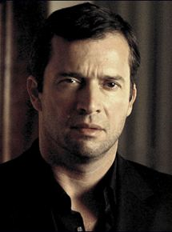

| Atividade | Ator |
|---|---|
| Nome de nascimento | James Brian Mark Purefoy |
| Nacionalidade | Britânico |
| Nascimento | 3 de junho de 1964 (Taunton, Somerset, Inglaterra, Reino Unido) |
| Idade | 53 anos |
James Purefoy começou a carreira de ator no teatro, em peças como Macbeth, Rei Lear e Hamlet na Royal Shakespear Company.
Depois de atuar em algumas séries de televisão e telefilmes, o ator fez sua estreia no cinema em Feast of July (1995).
Apesar de ter atuado em diversos filmes, como Feira das Vaidades (2004) e Sangue e Honra (2011), Purefoy é mais conhecido por seu trabalho na televisão.
O ator participou de séries de sucesso, como Rome e The Following, mas nunca deixou de atuar no cinema. Entre seus trabalhos na tela grande estão os filmes Resident Evil: O Hóspede Maldito (2002), O Cavaleiro e o Dragão (2004) e John Carter: Entre Dois Mundos (2012).